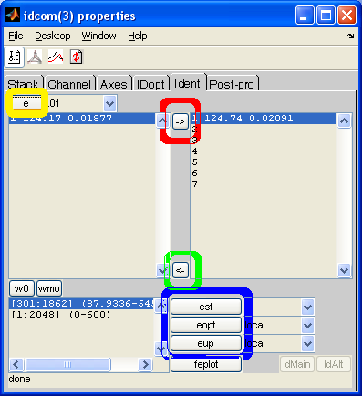
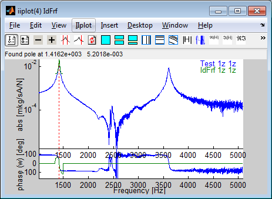

2 Analyse modale expérimentale
2.1 Identification = problème inverse pour estimer les modes
On cherche utilise maintenant des mesures au vibromètre laser chargées avec
mevib16('loadBrake -ci 3');
-
Q8: Identifier manuellement les modes expérimentaux manquants à l'aide de la commande SDT idcom. Voir section 2.3 pour le protocole d'identification des modes. Donner le résultat de votre identification en donnant
-
la liste des pôles ci.Stack{'IdMain'}.po (faire idcom('tableiipo'))
- superpositions de fonctions de transfert illustrant la qualité de votre résultat (au plus 3 superpositions).
- Q9: visualiser les deux premiers modes identifiés en figure 55. Les décrire = leur donner un nom.
- Q10: quand on presse dans iiplot quel indice change t'on dans la formule (1)? Idem quand, on presse dans feplot?
- Q11: Quelles sont les propriétés (symboles de (1)) variantes d'un transfert à l'autre.
2.2 Corrélation calcul/essai
L'objectif de cette section est de présenter quelques notions de corrélation calcul/essai.
-
Q12: expérimentalement, où les modes {yTest} sont ils connus ?
- Q13: dans le calcul, quelle matrice d'observation doit on construire pour comparer calculs {cφj} et essais {yTest} ?
La comparaison est faite à l'aide du critère de MAC (Modal Assurance Criterion) qui est le coefficient de corrélation donné par
|
MACij= | |
|
| ({yTest,i}H{yTest,i})({cφj}H{cφj}) |
|
(2) |
Le MAC vaut 1 (ou 100% selon la convention) pour des formes proportionnelles l'une à l'autre. Une valeur supérieure à 90 % est considérée comme très bonne. Au dessous de 0.6, les formes sont généralement très différentes.
mevib16('viewmac');
-
Q14: À quoi correspondent les abscisses et ordonnées du graphe de MAC ?
- Q15: Quels modes sont bien corrélés ? En quoi le critère de MAC aide t'il par rapport à une visualisation directe des déformées ?
Note : le modèle a été dégradé pour utiliser des éléments coque et contient le guide cable (qui n'est pas inclus dans le test ici, mais le sera plus tard).
2.3 Procédure d'identification
La procédure utilise une figure de boutons (onglet Ident) et une figure d'affichage des courbes (iiplot).


- Pour identifier un mode :
-
Cliquer sur le bouton e (entouré en jaune).
- dans la figure iiplot contenant les réponses, cliquer sur le maximum du pic en fréquence (Pick pole frequency)
- Pour valider le mode identifié, cliquer sur la flèche droite (entourée en rouge). La valeur est accessible par ci.Stack{'IdMain'}.po .
Pour enlever un pole utiliser la flèche gauche (entourée de vert).
- Recommencer l'identification de modes autant de fois que nécessaire, en alternant avec le raffinement (voir point suivant)
- Après avoir identifié tous les modes, estimer la fonction de transfert large bande en cliquant sur est (entouré de bleu)
- Sélectionner une bande de fréquence où l'identification n'est pas très bonne (utiliser les boutons wmo pour sélectionner et w0 pour revenir à l'ensemble de la bande), puis utiliser une des optimisations eopt ou eup (Donner un nombre d'itération jusqu'à convergence du calcul (quadratic cost constant)).
- Exécuter la commande idcom('tableIdMain') dans la fenêtre de commande Matlab (command window) et copier le résultat dans votre compte rendu.
Le processus fonctionnel de cette procédure et plus de détails peuvent être trouvés dans le manuel SDT (sdtweb('idrc'))
©1991-2015 by SDTools